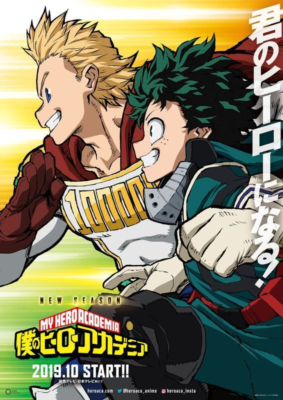

Lista de Animes
Lista de Animes

BOKU NO HERO ACADEMIA
SEASON 4
SINOPSIS
Las personas no nacen igual. El protagonista de esta historia es uno de esos casos raros que nacen sin superpoderes, pero esto no le impedirá perseguir su sueño: ser un gran héroe como el legendario All-Might. Para convertirse en el héroe que quiere ser, se apuntará a una de las academias de héroes más prestigiosas del país: Yueiko. Con la ayuda de su ídolo, All-Might, ¿podrá convertirse en un verdadero héroe?
VER SERIE
OVERLORD
SEASON lll
SINOPSIS
La historia da comienzo cuando Yggdrasil, un popular juego online, es cerrado un día sin previo aviso. Sin embargo, el protagonista, Momonga, decide no salir del juego. Momonga así se transforma y se convierte en “el mago más poderoso”. El mundo sigue cambiando con él dentro, y los NPCs comienzan a sentir emociones. Sin familia, amigos ni lugar en la sociedad, Momonga tendrá que luchar por adaptarse al nuevo mundo en el que se ha convertido el juego.
VER SERIE
NANATSU NO TAISAI
SEASON 2
SINOPSIS
Los “Siete Pecados Capitales”, un grupo de caballeros malignos que conspiraron para derrocar al Reino de Britania, se dice que fueron erradicados por los Caballeros Sagrados, aunque algunos dicen que aún viven. Diez años después, los Caballeros Sagrados dieron un golpe de estado y asesinaron al rey, convirtiéndose en los nuevos y tiránicos regidores del reino. Elizabeth, la única hija del rey, emprende un viaje para encontrar a los “Siete Pecados Capitales” y conseguir su ayuda para recuperar el reino.
VER SERIE

TATE NO YUUSHA
NO NARIAGARI
SINOPSIS
Iwatani Naofumi es el típico otaku, al menos hasta que un día encuentra en la biblioteca un libro que lo transporta a otro mundo. Allí se convertirá en el Héroe del Escudo, uno de los Cuatro Héroes Cardinales, y tendrá que luchar contra las Olas de la Catástrofe junto a los héroes de la espada, la lanza y el arco. Emocionado ante la perspectiva de vivir una gran aventura, Naofumi parte de viaje con su grupo. No obstante, al cabo de unos pocos días lo traicionan y pierde su dinero, su dignidad y el respeto de los que le rodean.
VER SERIE